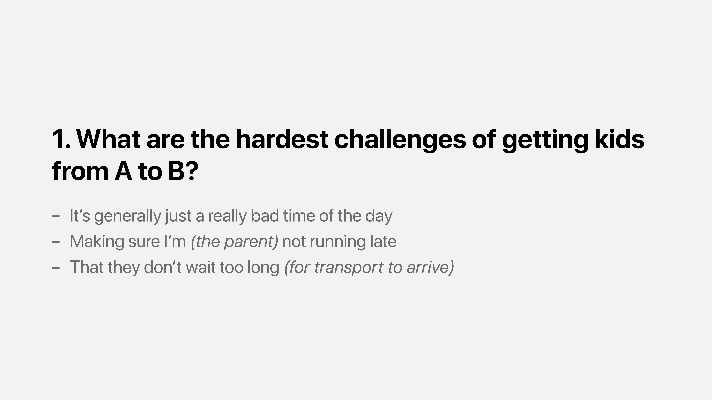
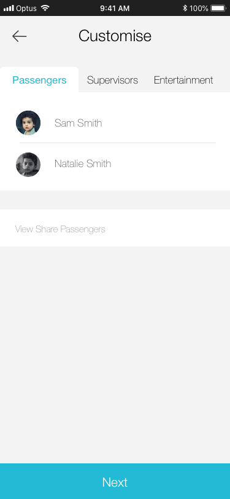

AutoKIDD

Over the course of 12 weeks, I was task with solving a design problem around how autonomous vehicles can be used to assist people in interacting with a future city. My group decided we wanted to look at this through the lens of a parent. We started by not knowing the specific type of problem we would solve or even the technology we would be designing for. We started through a general discussion around challenges that parents face and where technology could fit in. After about week or so of research we decided that transporting kids is a major challenge parents have to deal with consistent. This became the first step in our 12 weeks of researching, ideating, refining and testing our idea.
"We want to design an experience that makes transporting people safe, enjoyable and seamless, ensuring the requestor is in control and passengers are carefree."
To explain the final design we made a video. This walks through a typical user story, highlighting the problem and how this design solves it. It tells the story of a busy parent that realised that they have too many tasks to complete and are unable to take one of their children to an activity tomorrow. They use our service to book a trip and highlight some of the main features.
The final version of our idea was a refined version of an idea testing in two prior iterations. It takes the form a service that includes a futuristic autonomous car that takes kids to and from locations. The parent can request this service in advance or in the moment, selecting from either a private trip or one that’s shared with known passengers. The service includes an option to add a supervisor on the trip, allow the passengers to use the inbuilt entertainment (movies etc) and also to be able to communicate with the passenger or view a live feed.
First Core Feature
Book A Ride
The first core feature is the ability to book a trip. A trip is the process of an autonomous vehicle coming to take a passenger from one location to another. The user has flexibility in how they can do this either for right now, or for another date or time. There are two types of trips they can book. The first is a private, this means that only the people passengers selected at the time of the booking can participate in the ride. The other is shared, meaning that the passenger may be joining another person’s booking or allowing for other passenger to joins theirs.
The requestor can also choose to add a supervisor. This person will join the trip from start to finish. The booking also allows for the requestor to select entertainment options for the passenger, which are provided through a tablet like device in the car. The last step of the booking process is to review the customisation chosen and confirm the payment method.
The map UI is a key design component here as it give affordance to have perspective on the trip at any time. While making the booking a requestor can pull the booking card down to reveal a larger map they can zoom in and out of, and also move around to view surrounding places.
Second Core Feature
Confirm Upcoming Trips
The second core feature is to have requestors confirm upcoming bookings. This is important for two reasons, first it allows for flexibility if plans change and secondly it gives the requestors a reminder of the upcoming service. This confirmation comes in the form on a push notification (native to the OS) with a simple message to accept the upcoming trip. This confirmation is delivered for all upcoming bookings 1 hour before they commence. Once the requestor interacts with the notification they are taken directly to the booking in the app.
From here they can see all the details about the trip, with options to modify, cancel or confirm. Modify allows for a change in the route, customise options or to change the ride type. Cancel will ensure the trip doesn’t occur and confirm sends an acknowledgement to the service that the trip information has been verified and the requestors agrees to commence the booking.
Third Core Feature
Monitor A Trip
The third core feature is to be able to monitor an active trip. This feature has gone through many iterations and the final design has its components integrated into one screen. Once a requestor has booked a trip, then confirmed it they will have access to view information about the trip while it’s in progress. The requester is presented with an interactive map UI showing the current status of the trip (delays, reroutes etc) and an animating circle indicated where the vehicle is on route. The requester can also see the estimated arrival time at the top.
The other part of the interface are about two things: modifying the active trip and communicating with the passenger. Modifying the active trip will take you to a screen that allows you to change details such as the route, passengers and other customise options selected during the booking stage. The communicate section gives option for the requestor to interact with the passenger in 4 ways — as an audio call, video call, messenger chat or via a passive live feed feed. Once selected, each type of communication happens automatically and connect directly with the passenger without them having to accept.
Lastly there is an emergency button. This is a corner user case where either the passenger or a situation causes for a termination of the service, or the support of emergency services are required. This can be active by pressing on this button with a complementary button in the vehicle for passengers to use.
Design Process
Step 1
Research
The first step in this design process was to put together a research report. This involved (if possible) gathering first-hand experience in our problem area, to be able to fine tune to a specific problem we feel autonomous technology could make better. To achieve this we used several methods including research current solutions, interviews, contextual enquires and questionaries. We also wanted to guide our research so we decided on 5 question to answer:
- What are the hardest challenges of getting kids from A to B?
- What kind and level of supervision is needed for different age groups?
- What information does the requester provide?
- What makes a ride enjoyable for kids?
- What works well for current ride sharing users?
Each research method gave interested results that collectively formed a great picture of the space we could design in, even possible technology solutions. Some method provided more quantitive results, other qualitative so it was great to have a combination of both. Here is a summary of some results:

From here I created two personas with complimentary user story boards and user journey. This was really important as it allows us as designers to view this problem through the lens of users. Not being a parent myself it helped me to empathise with how this problem fits into the context of a typical users day, and opportunity to see pain points.
Using these new personas as guides, I combined all of my research to draw conclusions and provide research insights. Some of these were obvious from the beginning but others weren’t. For example we learnt that human connection is generally valued higher than convenience, supervision and control are very important and the solution must not be totally new, on the contrary it must fit into existing routines and handle unexpected change very well.
To ensure we could measure the success of this research, we went back to the original questions and seek to answer them. The evaluation of the results surfaces some great insights and allowed focus for potential solutions. Here are some examples of answers to the original questions:
Step 2
Ideation
Next was the chance to develop a number of ideas to test, explore and experiment with. We came up with two many ideas but decided to focus in on there. We felt these covered the typical cases of the problem, each from a unique perspective. These were complimented with storyboards and an iterative design process, including wireframe and simple prototypes.
Idea 1
School Bus
The first idea we explore was an autonomous school bus. Children are collected at their predefined location and delivered to school and taken home once school has finished. This idea is similar to the current public buses available now, however with a few tweaks. Once being the buses routes do not have to be the same each day, instead an optimal route depending on who books the service. The parents are able to monitor the buses progress, see if their child is on the bus and also the status of it’s journey.
Idea 2
Passenger App
This idea work in combination with the next idea. It’s an app from the perspective of a passenger of Uber like service. Where a requestor makes a booking for an autonomous vehicle to take them from A to B. Since the UI belongs to the vehicle, the passenger interacts with it in a could of ways. The entry/exit requires a card which the passenger users to tap on/off to enter/exit the vehicle. We explored different versions of this like face recognition and predefined passcode, however noticed through feedback that this approach was the most realistic and intuitive to the audience. Inside the vehicle there would be a screen the passenger uses to monitor the trip, access entertainment and communicate with their parent/requestor.
We also explored various safety features, for example how does the vehicle know when it’s safe to go? Naturally seat belts are a large factor in this, however this will take more consideration if the idea is explore more.
The design process for this took many forms. Without going into granular detail, below is one of the more final set of wireframes with annotations explaining design decisions. The focus here was to make a UI that was friendly to children, while at the same time presenting information in a clear and easy to understand manner.

Idea 3
Requestor App
This final idea was our strongest. It was a service that allowed a parent to be in total control of booking an autonomous vehicle to take their children between places, but also gave them a range of flexibility. They have options to book a private or shared ride, with options to communicate with the passenger, monitor the trip, select entertainment options and also have a supervisor join the trip.
While iterating the designs for these we several considerations to think about. What device would provide the best environment this this interaction, what information should be placed on which screens, and what order should those screens take place. As we were designing each iteration we prototyped the ideas amongst each other for quick feedback and also ran formal usability testing to ensure the changes were user driven.

Step 3
Refined Idea
Our usability testing told us that idea 3 had the most potential, realistic impact and direct benefit to users. We extended this idea by added in scheduling, a streamlined booking process and notifications. As we were still in an ideation phase we kept the designs in low fidelity so that we could continue to iterate quickly. We had a couple of main iterations for the refined idea. For example we took the customised trip UI into a tabbed navigation in one, and added cross functionality between communication methods in another. Below is the designs we took to usability testing for feedback from a set of potential users.
Step 4
Proposed Design
The final idea took a couple of iterations until we landed on a design we were happy with. At this stage we started to add colour, typography and aimed for consistency in our design language. We looked at possible design patterns that would be helpful and landed on a card style approach for the modules. An example of these cards is the button to make a booking and the flow of information selected when making the booking. This gave us a consistent user experience and what to expect when users were interacting with a feature that might have been new to them.
Here two examples of the the iterations for this stage. This first shows how we changed, adapted and simplified one of the areas to the booking process. We started with a tabbed navigation approach, however with user feedback found this was confusing, so we switch it to a tabbed card. This however fell outside of the design pattern we started using in other areas of the app so moved to the card approach (mentioned above). The final design included an update to the map making it more cohesive to the rest of the app.
This example focuses on the monitor screen. Early on we noticed we could eliminate a whole screen that was accessed via the communicate with X button and moved those actions directly into the interface. The placement of the emergency and trip status moved places as we got feedback on where users expected to see these modules. Finally we adjusted the colour scheme to allow for a more cohesive experience.
To highlight the final design, here is a walkthrough video that shows each screen and provides additional information to compliment the interactions.
Reflection
This design process has been a wonderful journey of learning new technique and skills and challenging me to think more from a user centred approach. There were two elements I enjoyed the most, first usability testing and secondly seeing a design from ideation to final product. The usability testing was great as I could see first hand how the perspective of users changed from the intent of the product and how valuable their feedback really is. Our changes become primarily based on their insights, to ensure we could keep to a user centred design process.
Secondly, seeing a design process go through a complete lifecycle was a great experience. Normally I am involved after the ideation, so this was refreshing to see what happens before wireframes. This was also good to not jump into a solution early, however follow the research and where possible solutions could work, instead of a preconceived idea of what should be the right thing. Overall it’s been a great 12 weeks, learning a lot and challenging myself in areas I am not usually exposed to. My normal area of focus is with development, so having these insights will make my code better as now I have an understanding from the users perspective.